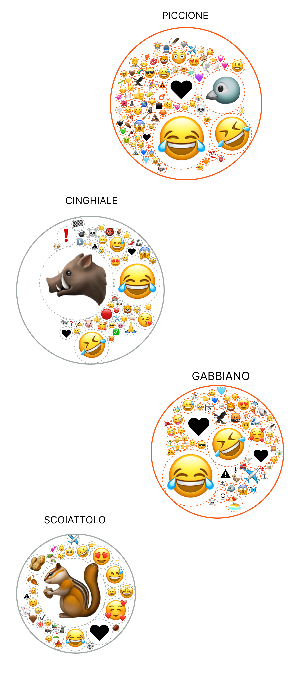
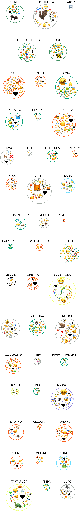
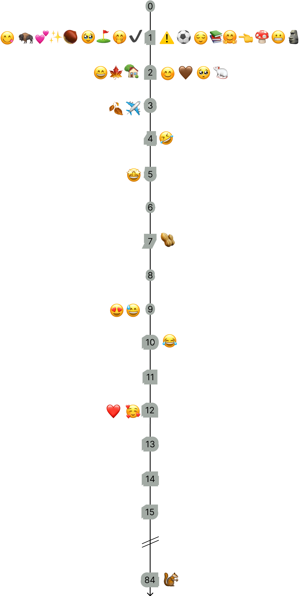
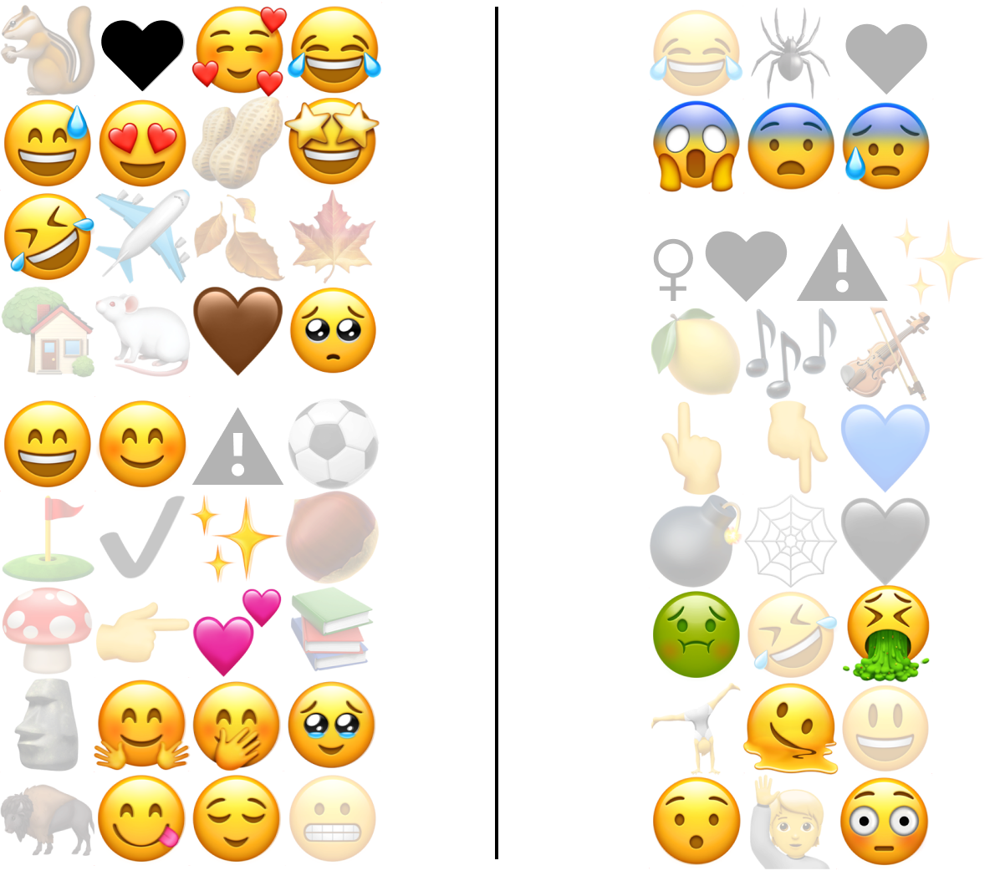
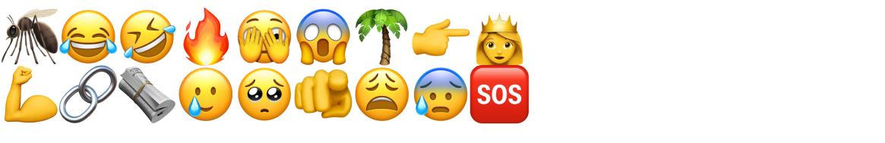

Piattaforma: Youtube
Data: 2024
Cuori per scoiattoli, Bleah per insetti
Mappatura delle emoji più utilizzate nelle didascalie dei video di fauna urbana su TikTok Italia.

Bianca Bauer, Gabriele Colombo, Alessandra Facchin e Michele Mauri
Quali emozioni emergono tra gli utenti di TikTok che interagiscono con i video di animali urbani?
E come vengono espresse queste reazioni emotive? Attraverso le emoji, che funzionano come scorciatoie per comunicare il contesto emotivo spesso assente nelle conversazioni scritte.
Questa storia analizza le reazioni agli animali urbani all'interno della comunità italiana di TikTok. Utilizzando le emoji come indicatori delle emozioni degli utenti, la ricerca indaga le associazioni più comuni tra emoji e specifici animali, rivelando interessanti differenze nelle percezioni e nelle emozioni condivise dagli utenti.
Nel complesso, la fauna urbana è rappresentata in modo positivo, ma emergono schemi chiari. Alcuni animali, come le farfalle e le api, ispirano amore e affetto, mentre altri tendono a disgustare gli spettatori. Gli insetti, ad esempio, ricevono commenti come: “⚠ Invasione ⚠ sono tra noi 👽👻🎃” e “Così le cimici sono arrivate a Milano🥶🤮🥲🤦”
Questa tendenza mostra come TikTok amplifichi la dimensione affettiva verso gli animali urbani, tracciando un quadro emotivo articolato che può influire in modo ambivalente sugli sforzi di conservazione della fauna selvatica urbana.
Nella nostra ricerca sono stati analizzati oltre 2.000 video TikTok dedicati alla fauna urbana italiana. Le emoji presenti nelle didascalie sono state identificate ed estratte, permettendo di visualizzare, per ciascun animale trattato, le emoji associate ai video. Queste sono state ridimensionate in base alla loro frequenza di utilizzo, offrendo una rappresentazione immediata delle reazioni emotive degli utenti.

Mentre altre categorie di animali ricevono molte meno reazioni Emoji:



Guardando i contenuti TikTok di animali urbani, gli spettatori esprimono soprattutto un atteggiamento positivo.
I video TikTok sugli animali urbani traboccano di risate e gioia. Gli scoiattoli, ad esempio, evocano principalmente sentimenti di amore e ammirazione, evidenziati dall’uso frequente di emoji come cuori, occhi innamorati e noccioline. Queste reazioni positive rafforzano il crescente fascino per queste creature, inserendole perfettamente nella consolidata “cultura del carino” che domina l’estetica di Internet.


Tuttavia, alcune specie come i ragni evocano solitamente emoji di paura e disgusto. Queste forti distinzioni nella percezione delle diverse specie evidenziano i rischi significativi che corrono le specie messe in ombra, distogliendo l'attenzione dal loro ruolo ecologico.

Non si tratta solo di un confronto tra ragni e scoiattoli: anche all’interno del mondo degli insetti le reazioni emotive mostrano notevoli variazioni. Alcuni insetti suscitano curiosità o persino tenerezza, mentre altri evocano disgusto o paura, riflettendo un panorama emotivo diversificato e sfaccettato.
Gli insetti in genere attirano emoji di disgusto e paura,
mentre le zanzare sono descritte con emoji di paura e dolore.

Al contrario, le api sono descritte con emoji positive.
Le farfalle, invece, sono avvolte da emozioni vivaci e sentite
Questa evidente differenza nasce dalla nostra inclinazione a favorire creature appariscenti, come le farfalle, e quelle percepite come utili, come le api, spesso celebrate come emblemi di biodiversità.
Comprendere queste percezioni è cruciale, poiché può influenzare in modo significativo gli sforzi di conservazione e il coinvolgimento del pubblico, aiutando a progettare strategie più efficaci e inclusive.